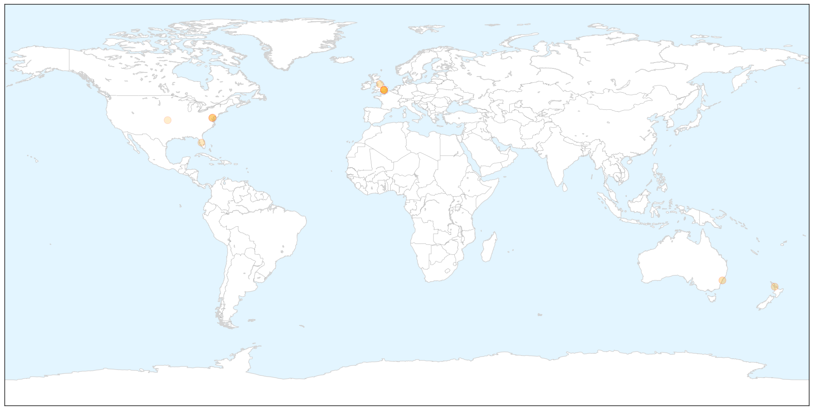

Toggle navigation
Early Warning
Return to Dashboard
Points of Interest
About the Project
Influenza
Apr 09, 2014
Compare to:
-
Dengue Fever
Hemmorhagic Fever
Mold/Fungal Infection
Meningitis
Pertussis / Whooping Cough
Middle East Respiratory Syndrome
Cholera
Hepatitis
Chikungunya
Yellow Fever
Bubonic Plague
West Nile Virus
Swine Flu
Ebola
Measles
Unknown
Mumps
30 Day Trends
Web: 0
alerts
, 0
warnings
Twitter: 1
alerts
, 0
warnings
Top Articles:
0.984
Abu Dhabi resident diagnosed with MERS virusUAE
0.945
Scientists say UK wasted £560m on flu drugs that are not proven
0.933
Review raises questions about Tamiflu
0.902
Tamiflu drug 'largely ineffective' in reducing hospitalisation
0.852
Study casts doubt on Tamiflu value
0.831
Government's £424m stock of bird flu drug ‘not fully effective’
0.756
Risk of Food Poisoning Twice as High in Restaurants, Safety Alert Says
0.747
Restaurants Pose Twice the Risk of Foodborne Outbreaks as Homes, CSPI Data Show
0.619
Researchers, regulators and Roche row over stockpiled drug Tamiflu
0.602
New clues to why RSV sends babies to the hospital
0.577
Flu Drugs Challenged in Full Data Review
0.532
Row erupts over influenza drug Tamiflu › News in Science (ABC Science)
0.502
UNC researchers find genetic trigger for RSV-induced infant hospitalizations
Top Tweets:
No tweets found for Apr 09, 2014
Web/News Articles
X
Tweets
X
Article Locations
X

Article Confidences
X